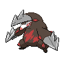

メガドリュウズexを中心カードとしてまとめた分類です。相方の手掛かりはメタグロス／ゲノセクトexです。
自動説明：承認済み分類の定義＋所属デッキの採用事実。説明版 30th-profile-hammer-v1。対象期間の60枚確認済み51入賞枠・51コード・36大会（未確認0枠）を用いています。



構築プロファイルと人の確認欄
当週 2026-11-06〜2026-11-12（7日） / 前週 2026-10-30〜2026-11-05（7日）
V2 対面推定（参考値）メガドリュウズexを中心カードとしてまとめた分類です。相方の手掛かりはメタグロス／ゲノセクトexです。
自動説明：承認済み分類の定義＋所属デッキの採用事実。説明版 30th-profile-hammer-v1。対象期間の60枚確認済み51入賞枠・51コード・36大会（未確認0枠）を用いています。
主戦略、攻撃役、エネルギー構成、例外を分けて記入します。
仮例: 「主攻撃: A / エネルギー: B中心 / 例外: C」
自動生成：所属リストの観測構成
平均枚数の分母：60枚確認済み入賞枠。不採用の0枚と同コードの反復入賞を含む。
中心カード・相方の実測：
ポケモン（採用率80%以上）：ゲノセクトex 51/51枠・平均2.00枚 / ダンバル 51/51枠・平均4.00枚 / メガドリュウズex 51/51枠・平均1.94枚
トレーナーズ（採用率80%以上）：ロケット団のラムダ 51/51枠・平均3.98枚 / エネルギーリサイクル 50/51枠・平均1.04枚 / ボスの指令 50/51枠・平均2.65枚
エネルギー（採用率80%以上）：基本鋼エネルギー 51/51枠・平均16.00枚
採用率80%以上の観測カードを各区分3枚まで表示。構築の安定性・推奨は判定しない。
説明用に指定したカードとエネルギー名の組合せです。相方や構築差を網羅せず、枚数の一致、新分類や戦略の一致を意味しません。
見えたカードから候補派生を置き、根拠・反証・不確実性を併記します。断定しません。
仮例: 「Xを観測。Y型候補だが、Z未確認のため保留」
自動生成：型候補の識別根拠
公開カードの目撃は型候補の手掛かりです。未目撃は不採用の証拠ではありません。不採用条件は完全60枚リストでのみ確認できます。
採用の手掛かり：メガドリュウズex。少なくともいずれか：メタグロス／ゲノセクトex。
所属分類の完全リストで説明条件に同時一致：51/51枠・51コード。不一致：0枠・0コード。他分類で同じ条件に一致：6/1067枠・6コード。
説明用の条件は他分類と重なることがあり、承認済みコード対応を置き換えません。対応表は学習分類器ではなく、カード効果・戦略・新規コードの分類は説明できません。
機械選定の規則と、人が典型例と判断した根拠を分けて残します。
仮例: 「機械: 順位・日付順 / 人の典型判断: 未確認」
候補自デッキからの対面方針、先後、注意、練習結果を記入します。ほかのメンバー意見と未検証も分けます。
仮例: 「先攻希望 / 注意: X / 練習: 未検証」
主サブ攻撃や戦い方を変える差、代表コードを記入します。
仮例: 「サブ攻撃Bを採用する型 / 代表コード: ABC」
採用リスト数は60枚確認済みの公開入賞枠数です。カード枚数ではありません。採用枚数分布の分母は、当週51枠・前週23枠です。平均採用枚数は0枚を含む60枚確認済み公開入賞枠の平均です。0枚は不採用として区別し、1枚以上は実測のある枚数だけを示します。分母が未確認なら率を補完しません。
| カード | 当週採用リスト数 | 当週採用率 | 当週の採用枚数分布 | 前週採用リスト数 | 前週採用率 | 前週の採用枚数分布 | 差分 | 分類 |
|---|---|---|---|---|---|---|---|---|
| ゲノセクトex | 51 | 100.00% | 平均 2.00枚 / 分母51枠0枚（不採用） 0.00%（0枠）2枚 100.00%（51枠） | 23 | 100.00% | 平均 2.00枚 / 分母23枠0枚（不採用） 0.00%（0枠）2枚 100.00%（23枠） | +0.00pt | 入賞枠単位の採用事実 |
| ダンバル | 51 | 100.00% | 平均 4.00枚 / 分母51枠0枚（不採用） 0.00%（0枠）4枚 100.00%（51枠） | 23 | 100.00% | 平均 4.00枚 / 分母23枠0枚（不採用） 0.00%（0枠）4枚 100.00%（23枠） | +0.00pt | 入賞枠単位の採用事実 |
| メガドリュウズex | 51 | 100.00% | 平均 1.94枚 / 分母51枠0枚（不採用） 0.00%（0枠）1枚 7.84%（4枠）2枚 90.20%（46枠）3枚 1.96%（1枠） | 23 | 100.00% | 平均 2.00枚 / 分母23枠0枚（不採用） 0.00%（0枠）2枚 100.00%（23枠） | +0.00pt | 入賞枠単位の採用事実 |
| メタグロス | 51 | 100.00% | 平均 1.80枚 / 分母51枠0枚（不採用） 0.00%（0枠）1枚 19.61%（10枠）2枚 80.39%（41枠） | 23 | 100.00% | 平均 1.65枚 / 分母23枠0枚（不採用） 0.00%（0枠）1枚 34.78%（8枠）2枚 65.22%（15枠） | +0.00pt | 入賞枠単位の採用事実 |
| メタング | 51 | 100.00% | 平均 4.00枚 / 分母51枠0枚（不採用） 0.00%（0枠）4枚 100.00%（51枠） | 23 | 100.00% | 平均 4.00枚 / 分母23枠0枚（不採用） 0.00%（0枠）4枚 100.00%（23枠） | +0.00pt | 入賞枠単位の採用事実 |
| モグリュー | 51 | 100.00% | 平均 2.63枚 / 分母51枠0枚（不採用） 0.00%（0枠）2枚 41.18%（21枠）3枚 54.90%（28枠）4枚 3.92%（2枠） | 23 | 100.00% | 平均 2.78枚 / 分母23枠0枚（不採用） 0.00%（0枠）2枚 21.74%（5枠）3枚 78.26%（18枠） | +0.00pt | 入賞枠単位の採用事実 |
| ロケット団のラムダ | 51 | 100.00% | 平均 3.98枚 / 分母51枠0枚（不採用） 0.00%（0枠）3枚 1.96%（1枠）4枚 98.04%（50枠） | 23 | 100.00% | 平均 4.00枚 / 分母23枠0枚（不採用） 0.00%（0枠）4枚 100.00%（23枠） | +0.00pt | 入賞枠単位の採用事実 |
| 基本鋼エネルギー | 51 | 100.00% | 平均 16.00枚 / 分母51枠0枚（不採用） 0.00%（0枠）15枚 11.76%（6枠）16枚 82.35%（42枠）17枚 3.92%（2枠）20枚 1.96%（1枠） | 23 | 100.00% | 平均 15.65枚 / 分母23枠0枚（不採用） 0.00%（0枠）14枚 4.35%（1枠）15枚 30.43%（7枠）16枚 60.87%（14枠）17枚 4.35%（1枠） | +0.00pt | 入賞枠単位の採用事実 |
| エネルギーリサイクル | 50 | 98.04% | 平均 1.04枚 / 分母51枠0枚（不採用） 1.96%（1枠）1枚 92.16%（47枠）2枚 5.88%（3枠） | 23 | 100.00% | 平均 1.09枚 / 分母23枠0枚（不採用） 0.00%（0枠）1枚 91.30%（21枠）2枚 8.70%（2枠） | -1.96pt | 入賞枠単位の採用事実 |
| ボスの指令 | 50 | 98.04% | 平均 2.65枚 / 分母51枠0枚（不採用） 1.96%（1枠）1枚 1.96%（1枠）2枚 31.37%（16枠）3枚 58.82%（30枠）4枚 5.88%（3枠） | 23 | 100.00% | 平均 2.87枚 / 分母23枠0枚（不採用） 0.00%（0枠）2枚 21.74%（5枠）3枚 69.57%（16枠）4枚 8.70%（2枠） | -1.96pt | 入賞枠単位の採用事実 |
| グラビティーマウンテン | 49 | 96.08% | 平均 1.06枚 / 分母51枠0枚（不採用） 3.92%（2枠）1枚 86.27%（44枠）2枚 9.80%（5枠） | 19 | 82.61% | 平均 0.83枚 / 分母23枠0枚（不採用） 17.39%（4枠）1枚 82.61%（19枠） | +13.47pt | 入賞枠単位の採用事実 |
| プレシャスキャリー | 49 | 96.08% | 平均 0.96枚 / 分母51枠0枚（不採用） 3.92%（2枠）1枚 96.08%（49枠） | 21 | 91.30% | 平均 0.91枚 / 分母23枠0枚（不採用） 8.70%（2枠）1枚 91.30%（21枠） | +4.77pt | 入賞枠単位の採用事実 |
| キチキギスex | 47 | 92.16% | 平均 0.92枚 / 分母51枠0枚（不採用） 7.84%（4枠）1枚 92.16%（47枠） | 19 | 82.61% | 平均 0.87枚 / 分母23枠0枚（不採用） 17.39%（4枠）1枚 78.26%（18枠）2枚 4.35%（1枠） | +9.55pt | 入賞枠単位の採用事実 |
| ジャンボアイス | 47 | 92.16% | 平均 1.08枚 / 分母51枠0枚（不採用） 7.84%（4枠）1枚 76.47%（39枠）2枚 15.69%（8枠） | 22 | 95.65% | 平均 1.17枚 / 分母23枠0枚（不採用） 4.35%（1枠）1枚 78.26%（18枠）2枚 13.04%（3枠）3枚 4.35%（1枠） | -3.50pt | 入賞枠単位の採用事実 |
| スペシャルレッドカード | 47 | 92.16% | 平均 1.04枚 / 分母51枠0枚（不採用） 7.84%（4枠）1枚 80.39%（41枠）2枚 11.76%（6枠） | 19 | 82.61% | 平均 0.91枚 / 分母23枠0枚（不採用） 17.39%（4枠）1枚 73.91%（17枠）2枚 8.70%（2枠） | +9.55pt | 入賞枠単位の採用事実 |
| ポケギア3.0 | 47 | 92.16% | 平均 2.43枚 / 分母51枠0枚（不採用） 7.84%（4枠）1枚 9.80%（5枠）2枚 29.41%（15枠）3枚 37.25%（19枠）4枚 15.69%（8枠） | 19 | 82.61% | 平均 2.17枚 / 分母23枠0枚（不採用） 17.39%（4枠）1枚 8.70%（2枠）2枚 21.74%（5枠）3枚 43.48%（10枠）4枚 8.70%（2枠） | +9.55pt | 入賞枠単位の採用事実 |
| なかよしポフィン | 46 | 90.20% | 平均 1.57枚 / 分母51枠0枚（不採用） 9.80%（5枠）1枚 52.94%（27枠）2枚 15.69%（8枠）3枚 13.73%（7枠）4枚 7.84%（4枠） | 22 | 95.65% | 平均 1.91枚 / 分母23枠0枚（不採用） 4.35%（1枠）1枚 43.48%（10枠）2枚 21.74%（5枠）3枚 17.39%（4枠）4枚 13.04%（3枠） | -5.46pt | 入賞枠単位の採用事実 |
| ロケット団のレシーバー | 42 | 82.35% | 平均 3.04枚 / 分母51枠0枚（不採用） 17.65%（9枠）1枚 1.96%（1枠）2枚 3.92%（2枠）3枚 11.76%（6枠）4枚 64.71%（33枠） | 19 | 82.61% | 平均 3.00枚 / 分母23枠0枚（不採用） 17.39%（4枠）1枚 4.35%（1枠）3枚 17.39%（4枠）4枚 60.87%（14枠） | -0.26pt | 入賞枠単位の採用事実 |
| スグリ | 39 | 76.47% | 平均 0.92枚 / 分母51枠0枚（不採用） 23.53%（12枠）1枚 60.78%（31枠）2枚 15.69%（8枠） | 20 | 86.96% | 平均 1.04枚 / 分母23枠0枚（不採用） 13.04%（3枠）1枚 69.57%（16枠）2枚 17.39%（4枠） | -10.49pt | 入賞枠単位の採用事実 |
| ハイパーボール | 37 | 72.55% | 平均 0.80枚 / 分母51枠0枚（不採用） 27.45%（14枠）1枚 66.67%（34枠）2枚 3.92%（2枠）3枚 1.96%（1枠） | 19 | 82.61% | 平均 1.00枚 / 分母23枠0枚（不採用） 17.39%（4枠）1枚 69.57%（16枠）2枚 8.70%（2枠）3枚 4.35%（1枠） | -10.06pt | 入賞枠単位の採用事実 |
| ポケモンいれかえ | 33 | 64.71% | 平均 0.69枚 / 分母51枠0枚（不採用） 35.29%（18枠）1枚 60.78%（31枠）2枚 3.92%（2枠） | 15 | 65.22% | 平均 0.65枚 / 分母23枠0枚（不採用） 34.78%（8枠）1枚 65.22%（15枠） | -0.51pt | 入賞枠単位の採用事実 |
| ジャッジマン | 30 | 58.82% | 平均 0.86枚 / 分母51枠0枚（不採用） 41.18%（21枠）1枚 33.33%（17枠）2枚 23.53%（12枠）3枚 1.96%（1枠） | 11 | 47.83% | 平均 0.61枚 / 分母23枠0枚（不採用） 52.17%（12枠）1枚 34.78%（8枠）2枚 13.04%（3枠） | +11.00pt | 入賞枠単位の採用事実 |
| シェイミ | 28 | 54.90% | 平均 0.55枚 / 分母51枠0枚（不採用） 45.10%（23枠）1枚 54.90%（28枠） | 15 | 65.22% | 平均 0.65枚 / 分母23枠0枚（不採用） 34.78%（8枠）1枚 65.22%（15枠） | -10.32pt | 入賞枠単位の採用事実 |
| ジャミングタワー | 28 | 54.90% | 平均 0.55枚 / 分母51枠0枚（不採用） 45.10%（23枠）1枚 54.90%（28枠） | 13 | 56.52% | 平均 0.57枚 / 分母23枠0枚（不採用） 43.48%（10枠）1枚 56.52%（13枠） | -1.62pt | 入賞枠単位の採用事実 |
| 夜のタンカ | 27 | 52.94% | 平均 0.59枚 / 分母51枠0枚（不採用） 47.06%（24枠）1枚 47.06%（24枠）2枚 5.88%（3枠） | 8 | 34.78% | 平均 0.35枚 / 分母23枠0枚（不採用） 65.22%（15枠）1枚 34.78%（8枠） | +18.16pt | 入賞枠単位の採用事実 |
| タケシのスカウト | 23 | 45.10% | 平均 0.76枚 / 分母51枠0枚（不採用） 54.90%（28枠）1枚 25.49%（13枠）2枚 11.76%（6枠）3枚 3.92%（2枠）4枚 3.92%（2枠） | 12 | 52.17% | 平均 0.65枚 / 分母23枠0枚（不採用） 47.83%（11枠）1枚 39.13%（9枠）2枚 13.04%（3枠） | -7.08pt | 入賞枠単位の採用事実 |
| メガエアームドex | 18 | 35.29% | 平均 0.35枚 / 分母51枠0枚（不採用） 64.71%（33枠）1枚 35.29%（18枠） | 6 | 26.09% | 平均 0.26枚 / 分母23枠0枚（不採用） 73.91%（17枠）1枚 26.09%（6枠） | +9.21pt | 入賞枠単位の採用事実 |
| リーリエの決心 | 10 | 19.61% | 平均 0.37枚 / 分母51枠0枚（不採用） 80.39%（41枠）1枚 3.92%（2枠）2枚 13.73%（7枠）3枚 1.96%（1枠） | 8 | 34.78% | 平均 0.74枚 / 分母23枠0枚（不採用） 65.22%（15枠）1枚 8.70%（2枠）2枚 17.39%（4枠）3枚 4.35%（1枠）4枚 4.35%（1枠） | -15.17pt | 入賞枠単位の採用事実 |
| アイアンディフェンダー | 9 | 17.65% | 平均 0.18枚 / 分母51枠0枚（不採用） 82.35%（42枠）1枚 17.65%（9枠） | 7 | 30.43% | 平均 0.30枚 / 分母23枠0枚（不採用） 69.57%（16枠）1枚 30.43%（7枠） | -12.79pt | 入賞枠単位の採用事実 |
| ふうせん | 6 | 11.76% | 平均 0.12枚 / 分母51枠0枚（不採用） 88.24%（45枠）1枚 11.76%（6枠） | 4 | 17.39% | 平均 0.22枚 / 分母23枠0枚（不採用） 82.61%（19枠）1枚 13.04%（3枠）2枚 4.35%（1枠） | -5.63pt | 入賞枠単位の採用事実 |
| からておうの稽古 | 5 | 9.80% | 平均 0.12枚 / 分母51枠0枚（不採用） 90.20%（46枠）1枚 7.84%（4枠）2枚 1.96%（1枠） | 0 | 0.00% | 平均 0.00枚 / 分母23枠0枚（不採用） 100.00%（23枠） | +9.80pt | 入賞枠単位の採用事実 |
| ツールスクラッパー | 5 | 9.80% | 平均 0.10枚 / 分母51枠0枚（不採用） 90.20%（46枠）1枚 9.80%（5枠） | 0 | 0.00% | 平均 0.00枚 / 分母23枠0枚（不採用） 100.00%（23枠） | +9.80pt | 入賞枠単位の採用事実 |
| ハバタクカミ | 5 | 9.80% | 平均 0.10枚 / 分母51枠0枚（不採用） 90.20%（46枠）1枚 9.80%（5枠） | 2 | 8.70% | 平均 0.09枚 / 分母23枠0枚（不採用） 91.30%（21枠）1枚 8.70%（2枠） | +1.11pt | 入賞枠単位の採用事実 |
| ミュウex | 5 | 9.80% | 平均 0.10枚 / 分母51枠0枚（不採用） 90.20%（46枠）1枚 9.80%（5枠） | 1 | 4.35% | 平均 0.09枚 / 分母23枠0枚（不採用） 95.65%（22枠）2枚 4.35%（1枠） | +5.46pt | 入賞枠単位の採用事実 |
| 公民館 | 5 | 9.80% | 平均 0.10枚 / 分母51枠0枚（不採用） 90.20%（46枠）1枚 9.80%（5枠） | 1 | 4.35% | 平均 0.04枚 / 分母23枠0枚（不採用） 95.65%（22枠）1枚 4.35%（1枠） | +5.46pt | 入賞枠単位の採用事実 |
| ふしぎなアメ | 4 | 7.84% | 平均 0.08枚 / 分母51枠0枚（不採用） 92.16%（47枠）1枚 7.84%（4枠） | 1 | 4.35% | 平均 0.04枚 / 分母23枠0枚（不採用） 95.65%（22枠）1枚 4.35%（1枠） | +3.50pt | 入賞枠単位の採用事実 |
| ロケット団の監視塔 | 4 | 7.84% | 平均 0.08枚 / 分母51枠0枚（不採用） 92.16%（47枠）1枚 7.84%（4枠） | 4 | 17.39% | 平均 0.17枚 / 分母23枠0枚（不採用） 82.61%（19枠）1枚 17.39%（4枠） | -9.55pt | 入賞枠単位の採用事実 |
| エンペルトex | 3 | 5.88% | 平均 0.06枚 / 分母51枠0枚（不採用） 94.12%（48枠）1枚 5.88%（3枠） | 1 | 4.35% | 平均 0.04枚 / 分母23枠0枚（不採用） 95.65%（22枠）1枚 4.35%（1枠） | +1.53pt | 入賞枠単位の採用事実 |
| ヒードラン | 3 | 5.88% | 平均 0.08枚 / 分母51枠0枚（不採用） 94.12%（48枠）1枚 3.92%（2枠）2枚 1.96%（1枠） | 0 | 0.00% | 平均 0.00枚 / 分母23枠0枚（不採用） 100.00%（23枠） | +5.88pt | 入賞枠単位の採用事実 |
| ポッチャマ | 3 | 5.88% | 平均 0.06枚 / 分母51枠0枚（不採用） 94.12%（48枠）1枚 5.88%（3枠） | 1 | 4.35% | 平均 0.04枚 / 分母23枠0枚（不採用） 95.65%（22枠）1枚 4.35%（1枠） | +1.53pt | 入賞枠単位の採用事実 |
| クセロシキのたくらみ | 2 | 3.92% | 平均 0.04枚 / 分母51枠0枚（不採用） 96.08%（49枠）1枚 3.92%（2枠） | 0 | 0.00% | 平均 0.00枚 / 分母23枠0枚（不採用） 100.00%（23枠） | +3.92pt | 入賞枠単位の採用事実 |
| ニャースex | 2 | 3.92% | 平均 0.04枚 / 分母51枠0枚（不採用） 96.08%（49枠）1枚 3.92%（2枠） | 0 | 0.00% | 平均 0.00枚 / 分母23枠0枚（不採用） 100.00%（23枠） | +3.92pt | 入賞枠単位の採用事実 |
| ヒーローマント | 2 | 3.92% | 平均 0.04枚 / 分母51枠0枚（不採用） 96.08%（49枠）1枚 3.92%（2枠） | 1 | 4.35% | 平均 0.04枚 / 分母23枠0枚（不採用） 95.65%（22枠）1枚 4.35%（1枠） | -0.43pt | 入賞枠単位の採用事実 |
| いいきずぐすり | 1 | 1.96% | 平均 0.02枚 / 分母51枠0枚（不採用） 98.04%（50枠）1枚 1.96%（1枠） | 0 | 0.00% | 平均 0.00枚 / 分母23枠0枚（不採用） 100.00%（23枠） | +1.96pt | 入賞枠単位の採用事実 |
| グリ | 1 | 1.96% | 平均 0.02枚 / 分母51枠0枚（不採用） 98.04%（50枠）1枚 1.96%（1枠） | 0 | 0.00% | 平均 0.00枚 / 分母23枠0枚（不採用） 100.00%（23枠） | +1.96pt | 入賞枠単位の採用事実 |
| ゴヨウ | 1 | 1.96% | 平均 0.02枚 / 分母51枠0枚（不採用） 98.04%（50枠）1枚 1.96%（1枠） | 2 | 8.70% | 平均 0.17枚 / 分母23枠0枚（不採用） 91.30%（21枠）2枚 8.70%（2枠） | -6.73pt | 入賞枠単位の採用事実 |
| ジプソ | 1 | 1.96% | 平均 0.02枚 / 分母51枠0枚（不採用） 98.04%（50枠）1枚 1.96%（1枠） | 0 | 0.00% | 平均 0.00枚 / 分母23枠0枚（不採用） 100.00%（23枠） | +1.96pt | 入賞枠単位の採用事実 |
| スボミー | 1 | 1.96% | 平均 0.02枚 / 分母51枠0枚（不採用） 98.04%（50枠）1枚 1.96%（1枠） | 0 | 0.00% | 平均 0.00枚 / 分母23枠0枚（不採用） 100.00%（23枠） | +1.96pt | 入賞枠単位の採用事実 |
| ミミズズex | 1 | 1.96% | 平均 0.02枚 / 分母51枠0枚（不採用） 98.04%（50枠）1枚 1.96%（1枠） | 0 | 0.00% | 平均 0.00枚 / 分母23枠0枚（不採用） 100.00%（23枠） | +1.96pt | 入賞枠単位の採用事実 |
| レジギガス | 1 | 1.96% | 平均 0.02枚 / 分母51枠0枚（不採用） 98.04%（50枠）1枚 1.96%（1枠） | 0 | 0.00% | 平均 0.00枚 / 分母23枠0枚（不採用） 100.00%（23枠） | +1.96pt | 入賞枠単位の採用事実 |
| AZの安らぎ | 0 | 0.00% | 平均 0.00枚 / 分母51枠0枚（不採用） 100.00%（51枠） | 1 | 4.35% | 平均 0.04枚 / 分母23枠0枚（不採用） 95.65%（22枠）1枚 4.35%（1枠） | -4.35pt | 入賞枠単位の採用事実 |
| シークレットボックス | 0 | 0.00% | 平均 0.00枚 / 分母51枠0枚（不採用） 100.00%（51枠） | 1 | 4.35% | 平均 0.04枚 / 分母23枠0枚（不採用） 95.65%（22枠）1枚 4.35%（1枠） | -4.35pt | 入賞枠単位の採用事実 |
| ゼイユ | 0 | 0.00% | 平均 0.00枚 / 分母51枠0枚（不採用） 100.00%（51枠） | 1 | 4.35% | 平均 0.09枚 / 分母23枠0枚（不採用） 95.65%（22枠）2枚 4.35%（1枠） | -4.35pt | 入賞枠単位の採用事実 |
| ブレイブバングル | 0 | 0.00% | 平均 0.00枚 / 分母51枠0枚（不採用） 100.00%（51枠） | 3 | 13.04% | 平均 0.13枚 / 分母23枠0枚（不採用） 86.96%（20枠）1枚 13.04%（3枠） | -13.04pt | 入賞枠単位の採用事実 |
| ポケモンキャッチャー | 0 | 0.00% | 平均 0.00枚 / 分母51枠0枚（不採用） 100.00%（51枠） | 1 | 4.35% | 平均 0.04枚 / 分母23枠0枚（不採用） 95.65%（22枠）1枚 4.35%（1枠） | -4.35pt | 入賞枠単位の採用事実 |
| ロケット団のファクトリー | 0 | 0.00% | 平均 0.00枚 / 分母51枠0枚（不採用） 100.00%（51枠） | 1 | 4.35% | 平均 0.04枚 / 分母23枠0枚（不採用） 95.65%（22枠）1枚 4.35%（1枠） | -4.35pt | 入賞枠単位の採用事実 |
未記入欄は推定で補完していません。人の確認済み対面方針・先後・練習結果の表は未記入です。V2による対面推定の参考値は別ページで確認します。これは実際に観測された勝敗ではありません。